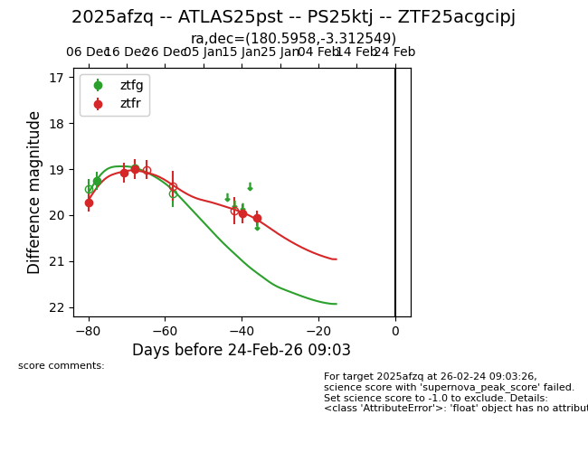
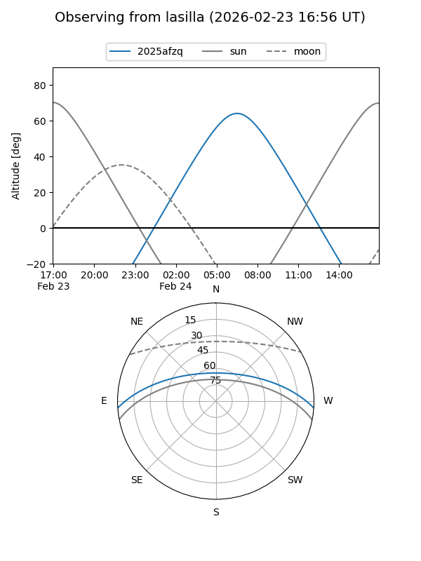
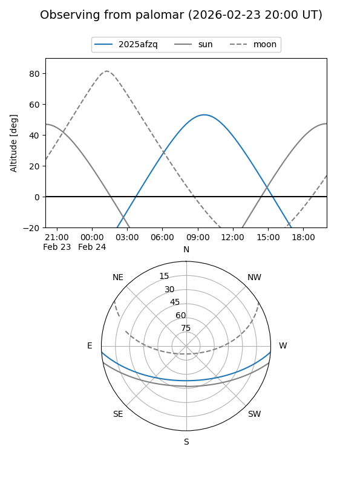
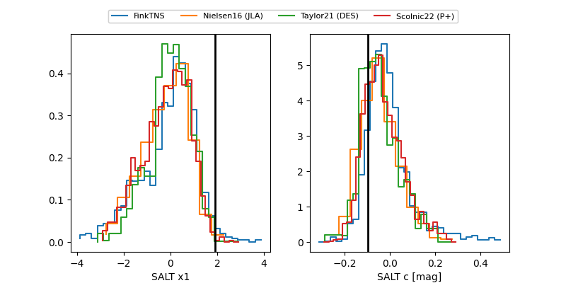

2025afzq
Target 2025afzq at 2025-12-18 16:02
Aliases and brokers:
FINK: fink-portal.org/ZTF25acgcipj
Lasair: lasair-ztf.lsst.ac.uk/objects/ZTF25acgcipj
ALeRCE: alerce.online/object/ZTF25acgcipj
TNS: wis-tns.org/object/2025afzq
YSE: ziggy.ucolick.org/yse/transient_detail/2025afzq
alt names
ZTF25acgcipj (ztf,fink_ztf)
2025afzq (tns,yse)
Coordinates:
equatorial (ra, dec) = 180.5959,-3.31241
equatorial (HMS+DMS) = 12:02:23.02,-03:18:44.69
galactic (l, b) = (279.7946,+57.33913)
Photometry
last atlaso=19.00, ztfg=18.98, ztfr=18.99
1 atlaso, 2 ztfg, 3 ztfr detections
Lightcurve

Visibility


Additional plots
